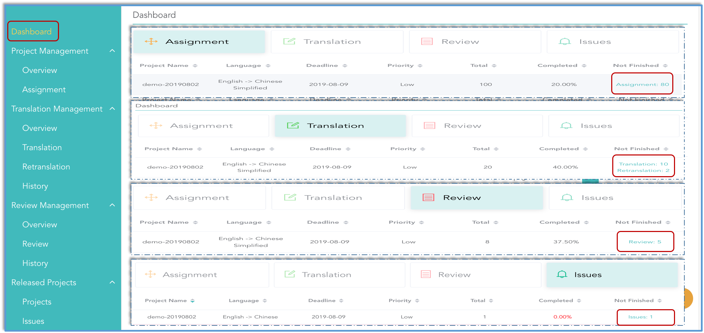
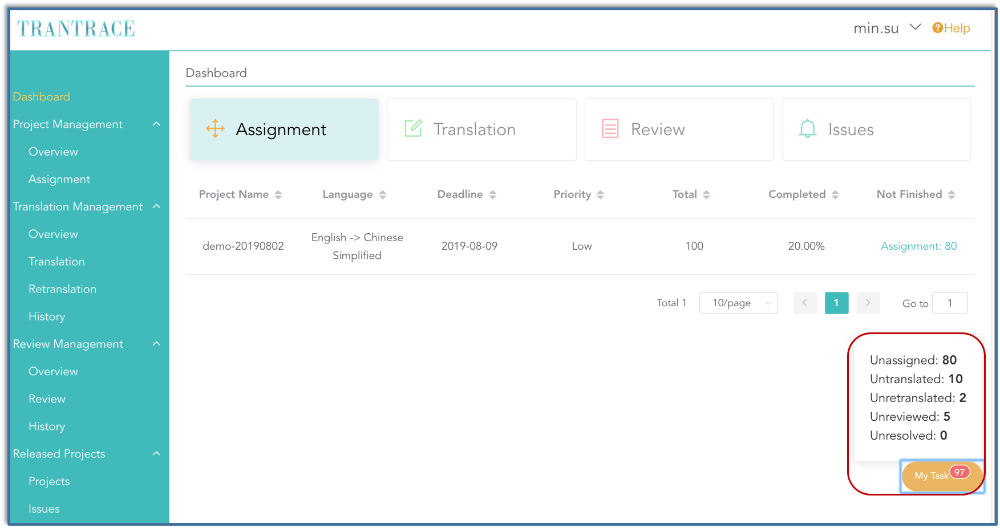

User Interface
Interface
All users share same interface, but have different workspace depending on the role in project.

Dashboard
All the workload and complete percentage are listed by project. Click on the blue link in last columns and they will take you to the items that have not been finished.

Description of table:
| Worker | total | completed | undone | corresponding undone status in MyTask | |
|---|---|---|---|---|---|
| assignment | owner | total item counts | assigned item percentage | unassigned item counts | unassigned |
| translation | translator | counts of items assigned to you | translated percentage | untranslated and retranslated item counts | untranslated & retranslated |
| review | reviewer | translated items | reviewed percentage | unreviewed item counts | unreviewed |
| feedback | owner | counts of items suggested by guests | replied percentage | suggested item counts | suggested |
Since the review of each entry is not assigned, all reviewers share same progress.
MyTask
My task real-time display all undone job into five categories: 'unassigned' and 'suggested' for master, 'untranslated' and 're-translated' for translator, 'unreviewed' for reviewer. Click and it will jump to corresponding workspace. More detail see status.
